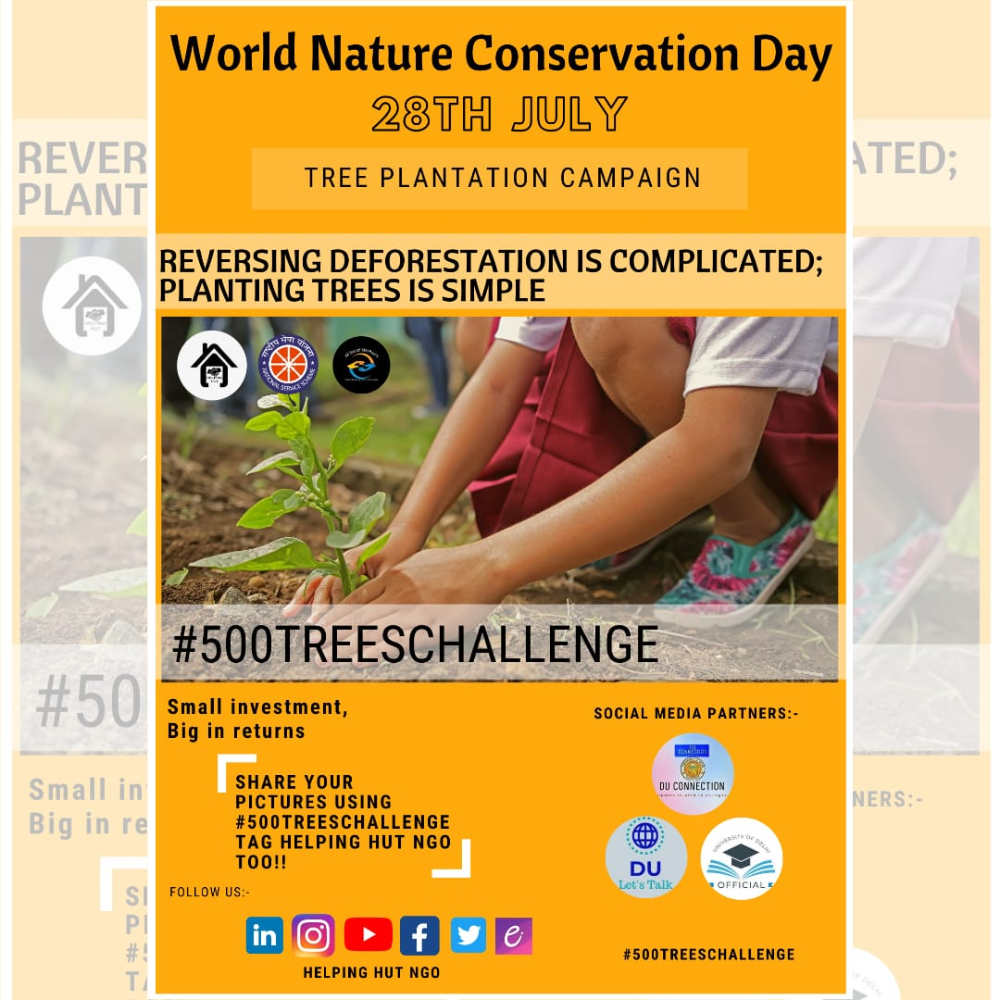

500TreeChallenge
August 25, 2020
No Comments

Life is incomplete without trees or say life is impossible. And because of these, we are alive today. Human beings along with animals and birds are all dependent on trees and plants.
“Trees exhale for us so that we can inhale them to stay alive. Can we ever forget that? Let us love trees with every breath we take until we perish.”
– Munia Khanbr
With this thought in our mind we (Helping Hut NGO) on the occasion of WORLD NATURE CONSERVATION DAY on 28th of July started a campaign of “PLANTING 500 SAPLINGS” as a first step of our contribution to the NATURE
Planting a sapling is not a big deal for anyone but proper caring of it with water and all the required things is as important as planting.
Above was the motto in our mind when we started the plantation drive and it was gone right as we thought it would to be.
Plants should be regularly planted to save the mankind and the animal world. Tree plantation and its after-care is as pleasing as planting work. We can get much pleasure in planting trees and in taking care of them. plant wherever possible but it is as important and necessary as breathing.